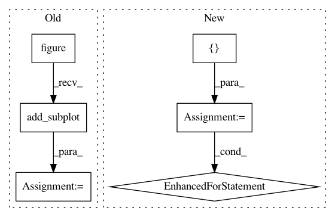

291c93ed820d042c35c8e544fc06868381439245,scipy/cluster/tests/test_hierarchy.py,TestDendrogram,test_dendrogram_plot,#TestDendrogram#,1442
Before Change
// Tests dendrogram plotting.
Z = linkage(_ytdist, "single")
fig = plt.figure()
ax = fig.add_subplot(111)
// test that dendrogram accepts ax keyword
R1 = dendrogram(Z, ax=ax)
plt.close()
// test plotting to gca (will import pylab)
R2 = dendrogram(Z)
After Change
@dec.skipif(not have_matplotlib)
def test_dendrogram_plot(self):
for orientation in ["top", "bottom", "left", "right"]:
yield self.check_dendrogram_plot, orientation
def check_dendrogram_plot(self, orientation):
// Tests dendrogram plotting.
Z = linkage(_ytdist, "single")
expected = {"color_list": ["g", "b", "b", "b", "b"],
In pattern: SUPERPATTERN
Frequency: 4
Non-data size: 6
Instances
Project Name: scipy/scipy
Commit Name: 291c93ed820d042c35c8e544fc06868381439245
Time: 2014-06-29
Author: cairj3@mail2.sysu.edu.cn
File Name: scipy/cluster/tests/test_hierarchy.py
Class Name: TestDendrogram
Method Name: test_dendrogram_plot
Project Name: matplotlib/matplotlib
Commit Name: d67550cee52588a9ff3cff49fbc45b0d878bca9a
Time: 2020-06-16
Author: tcaswell@gmail.com
File Name: lib/matplotlib/tests/test_patches.py
Class Name:
Method Name: test_large_arc
Project Name: matplotlib/matplotlib
Commit Name: 365d54c7eadcad1d9ff065299f75da7ca5f80d28
Time: 2018-07-05
Author: 2836374+timhoffm@users.noreply.github.com
File Name: lib/matplotlib/tests/test_axes.py
Class Name:
Method Name: test_symlog2
Project Name: matplotlib/matplotlib
Commit Name: 98ab2a07920610dae862d95363243572a84ea2c7
Time: 2020-06-16
Author: tcaswell@gmail.com
File Name: lib/matplotlib/tests/test_patches.py
Class Name:
Method Name: test_large_arc